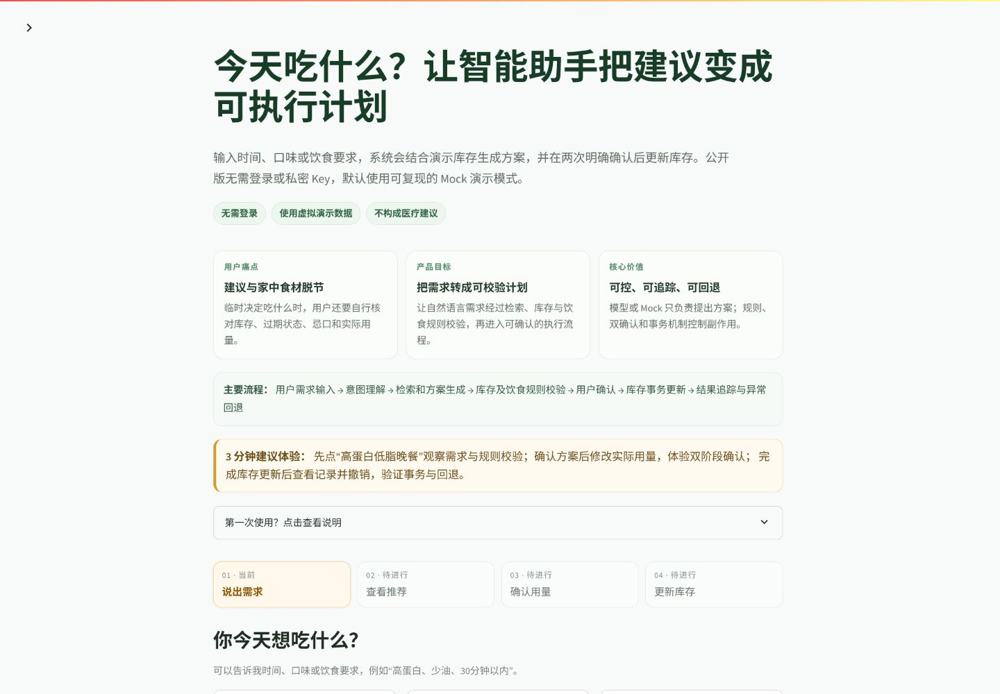
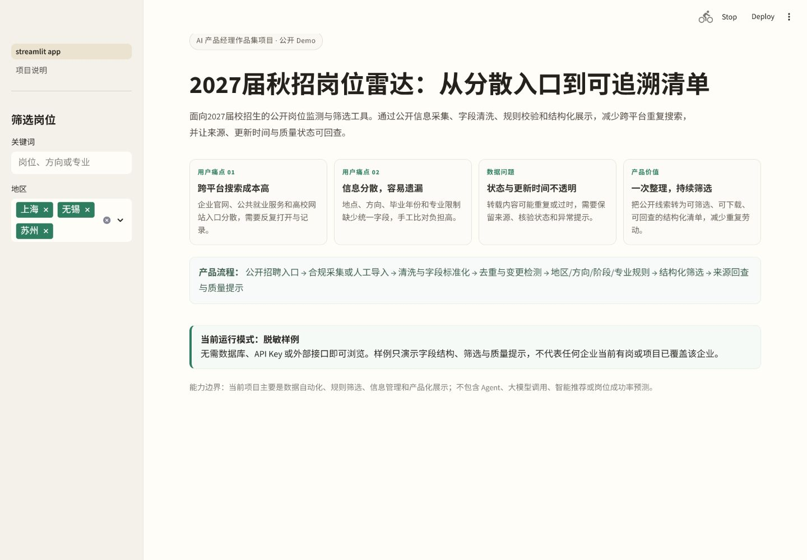

饮食建议与家中食材脱节
用户得到一道菜后，仍需自行核对库存、过期状态、忌口和实际用量；文字建议也不应直接修改库存。
AI PRODUCT MANAGER · CAMPUS RECRUITMENT PORTFOLIO
具备AI Agent、数据产品和独立应用开发经验，能够完成用户问题识别、产品方案设计、Demo搭建、测试评估与迭代落地。
作品集只使用仓库可验证信息；不虚构模型调用、用户规模、访谈或业务效果。
CAPABILITY MAP
用户得到一道菜后，仍需自行核对库存、过期状态、忌口和实际用量；文字建议也不应直接修改库存。
自然语言需求经过检索、方案生成和确定性校验，只有两次明确确认后才触发库存事务。
公开版强制使用可复现Mock，不声称正在调用GPT、Qwen或其他真实模型；全部数据为synthetic/sample。

理解需求、组织检索证据、输出候选MealPlan；不拥有库存写权限。
Pydantic与Python规则校验过敏、忌口、过期、单位、数量和营养范围。
双确认后由SQLite原子事务更新；失败整体回滚，成功结果可撤销。
TEST & BAD CASE
自动化测试覆盖路由、别名、规则边界、双确认、事务原子性、撤销与会话隔离。合成Prompt对比观察结构解析、规则通过、幻觉食材、重试与可执行性；明确不等同于真实用户A/B测试。
企业官网、公共就业服务和高校网站入口分散。
地点、方向、阶段和专业限制缺少统一表达。
转载可能重复或过时，需要保留来源与更新时间。
将公开线索转成结构化清单，降低重复劳动。
能力边界：这是数据自动化、规则筛选、信息管理和产品化展示项目；不包含Agent、大模型、智能推荐或岗位成功率功能。

来源配置、基础采集接口、清洗与统一字段。
毕业年份、地区、方向、阶段、专业限制、去重与变更检测。
无需数据库与Key的脱敏样例模式，补充来源和质量提示。
逐来源解析测试、异常告警、核验时间与状态变更日志。
AI + AUTOMOTIVE · MULTI-AGENT CONCEPT
面向车主的多Agent智能出行与车况助手。
需要把路线、日程、天气与补能协调到一次任务中。
多人、行李、儿童与到达时间让出发准备更复杂。
需要持续关注车况、续航、补能与异常风险。
信息分散在地图、天气、日程、车辆与充电站系统。
理解复合任务、拆分步骤、选择工具、汇总事实，并在关键操作前请求确认。
“明天上午带家人从上海去苏州……”
日程、天气、交通、车辆电量、胎压与维保状态。
估算出发窗口、路线与补能候选，并标记数据来源。
先展示车辆异常和关键假设，再请求用户确认。
输出出发时间、路线、补能点、提醒和应急建议。
SAFETY BOUNDARY
EVALUATION
PRODUCT METHOD
用可验证的MVP缩短“想法”和“证据”之间的距离。
先确认用户为什么被现状阻塞。
明确谁、何时、在什么约束下使用。
保留最短闭环与清晰安全边界。
把关键流程做成可交互原型。
用任务、规则和结果指标验证。
按失败类型定位产品或系统问题。
回归测试后再进入下一轮。
CONTACT & LINKS
陈蔚昕 · AI产品经理 / AI创新产品
仅公开求职所需联系方式，不展示手机号或其他非必要个人信息。